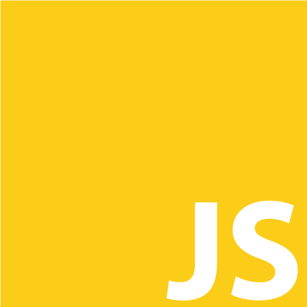

Tills min utbildning är klar och jag är anställningsbar.
Efter 6 år som lackerare och 1000 timmar i sprutboxen så kände jag att det var dags att byta bana.
Jag älskar lackeringsyrket och att få jobba aktivt hela dagarna, men jag kände endå att framtiden såg ganska begränsad ut
och jag behövde något nytt.
Jag växte upp i Nykvarn strax utanför Södertälje med mina föräldrar och min yngre syster.
När jag var 10 år och hade besökt gokarthallen i Södertälje Hamn ett flertal gånger så gav pappa mig chansen att testa
en riktig tävlingsgokart. Hela familjen fastnade för sporten och senare samma år satt även min syster i en kart.
De kommande 12-13 åren skulle vi spendera nästan varenda sommarhelg på Sveriges banor, från Skelefteå i norr till Kristianstad i söder.
Det var under den här tiden jag också fick upp ögonen på alla fatastiska hjälmar som förarna hade målade till sig.
Ett sätt att personifiera sig och sticka ut, trots att man gömde sig bakom ett visir.
Jag hade alltid ritat och målat, så det kändes helt rätt när jag som 13 åring skaffade mig min första airbrush spruta.
Många timmars övning senare så började jag ge mig på andras hjälmar, och resultatet vart bättre och bättre.
Det var det här spåret som fick mig att i gymnasiet utbilda mig som billackerare. Utbildningen gick bra och innan studenten
fick jag frågan av skolans rektor om jag var intresserad av en tjänst där efter sommaren som assisterande lacklärare.
Jag tackade ja och arbetade där det kommande året.
Min tidigare klasskamrat Oskar hade arbetat på Scanias lackering i Södertälje i knappt ett år, och han ringde nu och
berättade att de letade efter en erfaren lackerare. Jag sökte jobbet och fick det ganska omgående.
Jag har nu lackerat på Scania i 6 år. Både dag och kväll. Jag har arbetat som Team-Leader och som lackerare.
Men nu byter jag bana.
Jag fick ett tips av min syster att prova på att programmera lite i Javascript för det började en utbildning till hösten som hon
var sugen på att söka. Jag visste inte vad Javascript var men man kunde göra en liten snabbkurs och så skulle man bli behörig
att söka till den här skolan.
Nu har jag läst Front-End utveckling på KYH i ett halvår och det känns helt rätt.
Vårat första grupprojekt i skolan var att skapa en interaktiv mockup av ett learning management system (LMS)
för bland annat Yrkeshögskolor för att underlätta kommunikationen för elever och lärare.
På sidan ska man kunna lämna in arbeten, anmäla sin närvaro och mycket annat.
Läraren ska även kunna dela upp klasserna i grupper och skapa slumpade närvarokoder för att säkerställa
korrekt närvaro vid sina lektioner.
Dessutom ska man kunna logga in som administratör och hantera utbildningar, klasser, lärare och elever.
Jag och fyra andra klasskamrater tog oss an projektet med ett gruppnamn som Tiger, varav vårat projektnamn Tiger-LMS.
Sidan skapades med hjälp av HTML5, CSS3 och Javascript. Vi använde oss även av jQuery för att lösa vissa problem.
Arbetet startade den 27:e September och redovisades som färdigt den 30:e November.
Den här portfoliosidan är vårat andra projekt i skolan och vårat första individuella.
Tanken med det här är att portfoliot ska fungera lite som ett CV på webben där vi inte bara berättar vad vi kan,
utan också kan visa det direkt.
Just nu är den i sitt första stadie med en väldigt enkel och ren design, enbart skapad med HTML5 och CSS3, men jag
ska se vad jag kan implementera här som bidrar till en lite häftigare upplevlse.
Planen är att, förutom ge sidan en hel del Javascript och dess bibliotek, även jobba med Bootstrap och och andra
verktyg jag kommer lära mig under min utbildning.
Håll utkik efter uppdateringar och om ni vill kontakta mig finns det länkar längst ner på sidan.